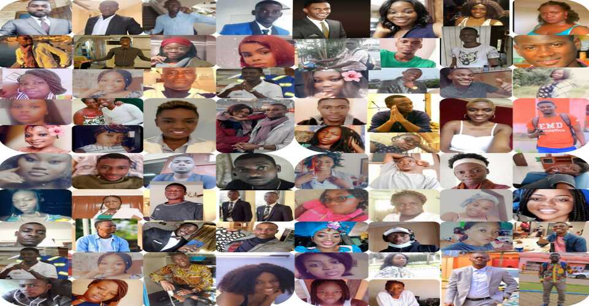

C'est quoi la famille ?
La famille pour moi représente la première particule ou on est mis en place. Celle-ci est la pour nous amener prémièrement un cadre de vie, une éducation et donc au travers de cela un style de vie qui nous sera propre. La famille est un ensemble de personne qui ont en communs un lien de parenté mais pas seulement car celle-ci peut s'étendre aux gens qui ont juste en communs une réligion ou bien des organisations, une amitié très profondes ...
Parler de la famille suppose de parler d’un objet si « familier », si commun à tous, qu’il risque d’être évident et donc un peu ennuyeux à décrire. Qui de nous tous n’en sait quelque chose ? Par hypothèse, nous avons encore, ou bien nous avons eu, une famille ? Existerait-il même une société ou des individus qui se passeraient de famille, petite ou grande, glorieuse ou misérable, ordinaire ou originale ?
2 Cette dimension « familière » – puisque cet adjectif vient du mot famille (en latin familia) – nous prévient aussi que nous allons parler de quelque chose d’intime, qui appartient à notre vie privée, peut-être à notre vie secrète qu’il ne faut pas mettre sur la place publique. 3 La famille est ainsi : publique dans certaines de ses fonctions, privée et secrète dans d’autres. D’emblée écartelée ou, si on le voit positivement, faisant pont entre ces espaces du dedans et du dehors.